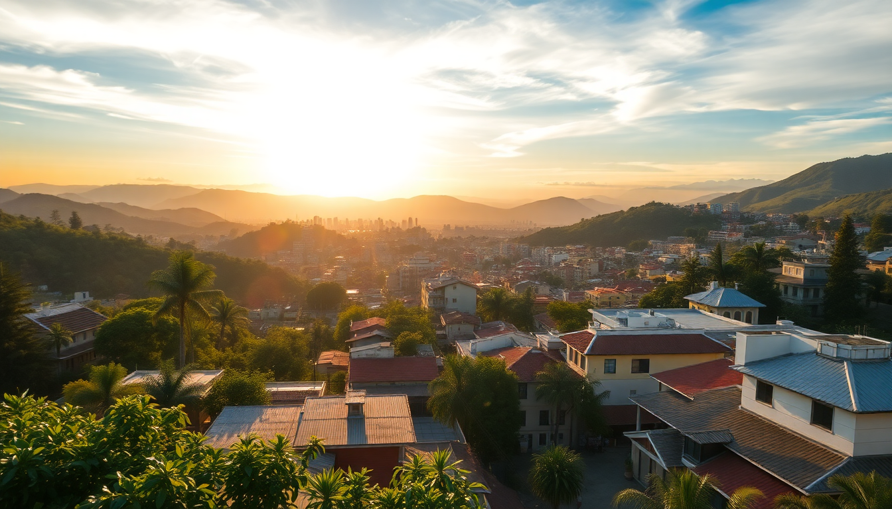

Best Cities to Visit in Colombia: Bogotá, Medellín, Cartagena & Cali

I spent six weeks bouncing between Bogotá, Medellín, Cartagena, and Cali, and each one felt like a different country. Colombia’s cities have distinct personalities—altitude, weather, rhythm, and food all shift dramatically. Here’s what I learned about picking the right city for your trip, where to stay, and what to skip.
How do Bogotá, Medellín, Cartagena, and Cali compare for a first-time visitor?
Each city serves a different mood. If you only have ten days, pick two. If you have two weeks, you can do three without rushing. Cali is the odd one out—it’s worth it if you want salsa or a grittier, less touristy scene, but it’s not a must-see for everyone.
- Bogotá is high-altitude (2,600m) and cool year-round. Best for museums, street art, and serious food. Think layered jackets, not shorts.
- Medellín sits at 1,500m with eternal spring weather. Best for digital nomads, nightlife, and urban innovation. Comuna 13 and the Metrocable are the big draws.
- Cartagena is hot, humid, and coastal. Best for colonial architecture, rooftop bars, and beach day trips. The old town is beautiful but touristy.
- Cali is lowland heat with a raw salsa culture. Best for dancers, budget travelers, and anyone who wants to avoid crowds. It’s rougher around the edges.
What are the best neighborhoods to stay in each city?
I made the mistake of booking a hotel in the wrong part of Bogotá on my first trip—don’t do that. Neighborhood choice matters more than the hotel itself.
Bogotá:
- Chapinero – My pick for first-timers. Safe, walkable, tons of restaurants and bars. We stayed near Calle 63 and walked everywhere.
- La Candelaria – Historic center, cheaper, but sketchy after dark. Fine for daytime sightseeing, but I wouldn’t stay there again.
- Usaquén – Upscale, quieter, great Sunday market. Good for families or longer stays.
Medellín:
- El Poblado – The gringo zone. Safe, full of hostels and rooftop pools. Parque Lleras is loud at night but convenient. We stayed at The Charlee Hotel—pricey but the view from the rooftop is hard to beat.
- Laureles – More local, more relaxed, cheaper. Better food scene in my opinion. Try Mondongo’s for a proper bandeja paisa.
- Envigado – Further south, residential. Only worth it if you’re visiting friends or want a quiet base.
Cartagena:
- Old Town (Centro) – Beautiful but expensive. We paid a premium for a boutique hotel on Calle del Sargento Mayor and it was worth it—everything was walkable.
- Getsemaní – Grittier, cheaper, full of street art and hostels. Plaza de la Trinidad is the social hub. Stay here if you’re on a budget.
- Bocagrande – High-rise beach area. Not my vibe—feels like Miami without the charm. But the hotels are modern and the beach is okay.
Cali:
- Granada – The safest and most walkable. Restaurants, bars, and the river walk. We stayed at Hotel Spiwak—clean, central, decent pool.
- San Antonio – Bohemian hill neighborhood. Great views, cheap hostels, but steep walks. Good for salsa schools.
- Centro – Avoid unless you know the city. Pickpocketing is common.
Which city has the best food, and where should I eat?
Colombian food gets a bad rap for being repetitive (rice, beans, plantains, meat), but the cities each have specialties that break the mold.
Bogotá wins for variety. The restaurant scene is genuinely impressive. Go to Mercado de Paloquemao for a cheap fruit tour—try lulo, granadilla, and pitaya. For dinner, Andrés Carne de Res in Chía is an experience (loud, chaotic, delicious), but if you want something refined, book Criterión in Chapinero.
Medellín is the land of bandeja paisa and arepas. Skip the tourist trap Hacienda and go to La Provincia in Laureles for a proper meal. Also hit up Café Velvet for excellent coffee—Medellín’s coffee culture is underrated.
Cartagena has the best seafood. La Cevichería on Calle del Sargento Mayor is famous for a reason—the ceviche mixto is killer. Don Juan is overpriced but the tasting menu is solid if you want a splurge. Avoid street food near the wall at night; it’s mostly reheated tourist trash.
Cali surprises you with cheap, hearty food. Lulo Café in Granada does a mean lulada (a local drink) and empanadas. El Cholado is a shaved-ice dessert you’ll see everywhere—try it with condensed milk.
Is it safe to take public transport in these cities?
Yes, with caveats. I used the metro in Medellín and Cali, buses in Bogotá, and walked everywhere in Cartagena. Each system has quirks.
- Bogotá’s TransMilenio is efficient but packed. Avoid it during peak hours (7–9 AM, 5–7 PM) unless you enjoy being crushed. The bus system is confusing—use Uber or Didi instead.
- Medellín’s Metro is the pride of the city. Clean, safe, cheap. Take the Metrocable up to Santo Domingo for insane views. The cable car is part of the transit system, not a tourist ride.
- Cartagena has no functional public transport. Walk the old town, take a taxi for longer hauls (negotiate the fare before getting in), or use Uber (it’s technically illegal but works).
- Cali’s MIO bus system is okay for daytime. Avoid it after dark. The city is walkable in Granada and San Antonio, but don’t walk alone at night.
When is the best time to visit each city?
Colombia doesn’t have four seasons—it has wet and dry. Timing matters more for Cartagena than for Bogotá.
- Bogotá is cold and rainy year-round. December–January and July–August are driest. I went in February and got two weeks of sun. Pack a rain jacket regardless.
- Medellín has eternal spring (22–27°C). Rain is unpredictable but brief. December–March is driest. Avoid the Feria de las Flores in August unless you want massive crowds and inflated prices.
- Cartagena is brutal from June–November (rain, humidity, mosquitoes). December–April is the sweet spot: hot but bearable. I went in January and it was perfect for beach days.
- Cali is hot year-round (30°C+). The Feria de Cali in late December is the biggest salsa festival—amazing if you’re into dancing, but hotel prices triple. March and September are quieter.
What’s worth skipping in each city?
I’ll be honest about what I found overrated.
- Bogotá’s Monserrate – The view is nice, but the queue is long and the cable car is overpriced. If you’re short on time, skip it and go to Cerro de la Conejera for a free hike.
- Medellín’s Parque Lleras – Drunk tourists, overpriced drinks, and aggressive touts. Go once for the spectacle, then head to La 70 for a more local night out.
- Cartagena’s Islas del Rosario – The boat trip is chaotic, the “beaches” are packed, and the reef is bleached. Instead, take a day trip to Playa Blanca on Barú—still touristy, but better sand.
- Cali’s Zoo – It’s fine for kids, but not worth a detour if you’re only there for a few days. Spend your time in a salsa club instead.
FAQ
Is it safe to travel between these cities by bus? Yes, but take the premium buses. I used Expreso Brasilia from Bogotá to Medellín (9 hours) and it was comfortable, with reclining seats and a meal stop. Avoid night buses in rural areas—roads are winding and poorly lit. For Cartagena to Cali, fly (1.5 hours) instead of the 12-hour bus.
Do I need to speak Spanish to get around? It helps a lot. English is common in Medellín’s El Poblado and Cartagena’s old town, but in Cali and Bogotá’s neighborhoods, you’ll struggle without basic phrases. I used Google Translate for menus and taxi negotiations. Learn “cuánto cuesta” and “gracias.”
Which city is best for solo travelers? Medellín, hands down. The hostel scene is huge, the metro is easy, and the city is set up for digital nomads. Bogotá is fine but feels more intimidating at first. Cartagena is romantic—better for couples. Cali is the hardest for solo travelers because the salsa scene is couple-oriented.
Conclusion
- Pick Medellín if you want the best all-around experience: good weather, safe transport, and a mix of culture and nightlife.
- Pick Bogotá if you care about food, museums, and altitude—but pack for cold rain.
- Pick Cartagena for colonial beauty and beach days, but expect tourist crowds and high prices in the old town.
- Pick Cali only if you’re serious about salsa or want to avoid the gringo trail entirely.